枝から生まれた、画材。
梨の剪定枝を活かした持ち手と、36種類の抽象的な模様。押す、重ねる、向きを変える。スタンプを使って、自由に描くcreative toolです。
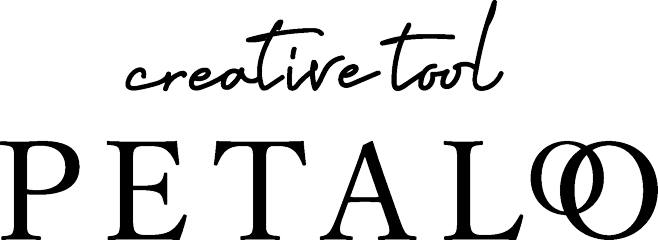
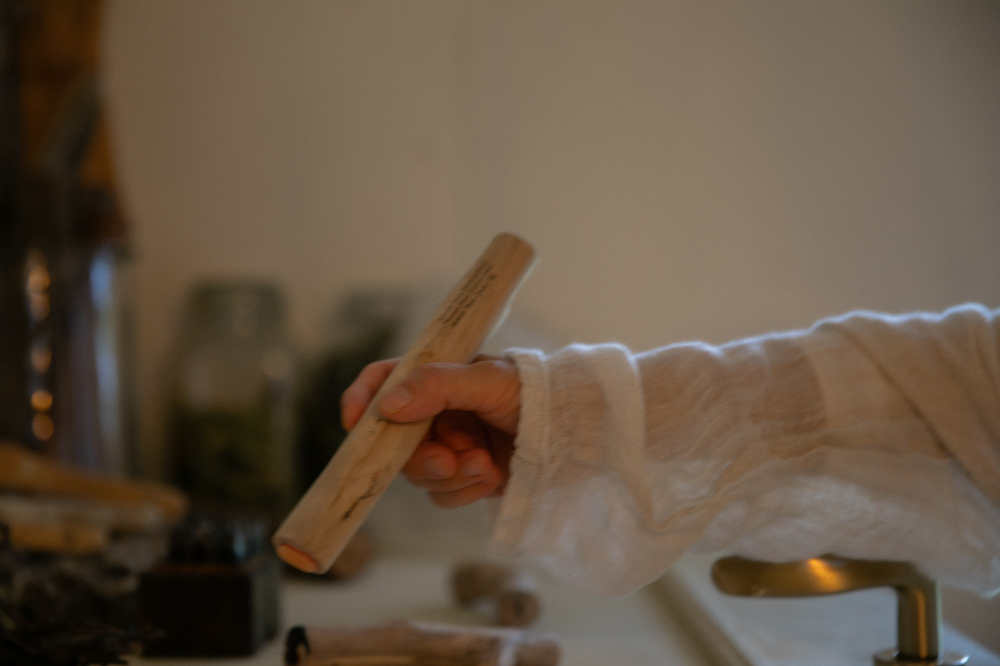
FROM A BRANCH, A POSSIBILITY.
誰もに、描く喜びを。
EVERYONE IS A CREATOR.
誰もが「描く喜び」から、自らの創造する力に前向きになれる体験を。
創造性は、特別な人だけのものではありません。私たちが生まれながらに持っているものです。私たちは、人との関わりの中で生きています。誰かを思いやり、つながり、ただ誰かを喜ばせたいと願うことから、創造は生まれます。
けれど日々の暮らしの中で、自分の創造性はもう消えてしまったのか、それとも初めからなかったのかと、ひそかに疑ってしまう時があります。でも、創造性は技術ではありません。獲得したり、失ったりするものではありません。私たちの中に最初から息づいている、人間の本能です。
PETALOは、この信念から生まれました。廃棄される梨の枝からつくられた、手で感じるスタンプ型の画材。丁寧な人の手仕事によって、果樹の木に眠る美しさを引き出します。抽象的な模様には、決まった意味がありません。ひと押しするたびに、予想も計画もしなかった、静かに美しい何かが生まれます。
ひと押しが、セレンディピティとの出会いをひらきます。言葉より先に手が動き、心と身体が再びつながる。そして創造性が、静かに日常へ戻ってきます。子どもたちに。年を重ねた人たちに。もう失ってしまったと思っていた人に。誰かに、そして自分にも、喜びを届けたいと願うすべての人に。
PETALOは、ただの道具ではありません。穏やかな革命です。ひとりの思いやりが、次の人の思いやりに火を灯す、小さなきっかけ。創造性が、やわらかく、絶えずめぐっていきます。
誰もが、創造する人。
どんな年齢でも。どんな始まりでも。いつでも。
— 共創から生まれる、ソーシャルグッドなコミュニティプロジェクト
FEEL. CREATE. BLOOM.
梨の枝を手にとって、模様をひとつ。
重ねるたびに、自分だけの景色が生まれます。
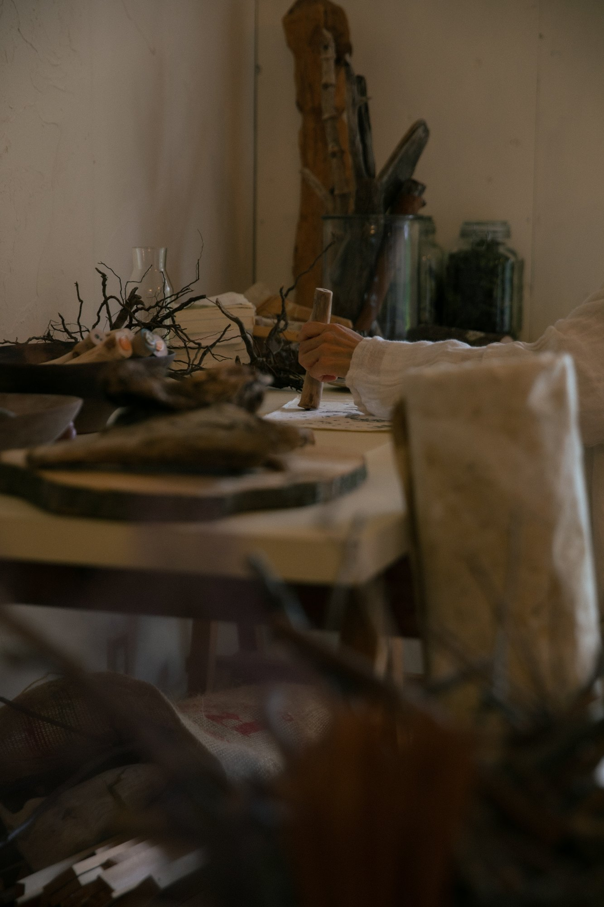
梨の剪定枝を活かした持ち手と、36種類の抽象的な模様。押す、重ねる、向きを変える。スタンプを使って、自由に描くcreative toolです。
上手に描くことより、感じることから。描くことにためらいがある人にも、創造する喜びへの入り口を届けたい。その思いから生まれました。
図案に決まった意味はありません。同じ模様でも、力加減や重なりで表情が変わる。一本ずつ異なる枝とともに、自分の見方を楽しめます。
A LITTLE SPACE FOR CREATIVITY.
木のかたちを感じて、箱を開く。
自分のために。大切な誰かへの贈りものに。
価格・セット内容・配送条件は、ストアでご確認ください。
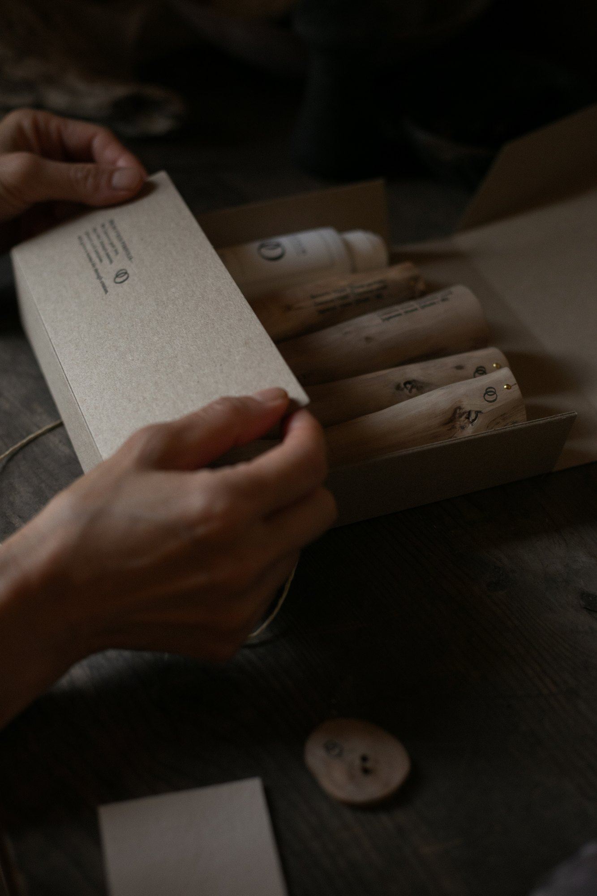
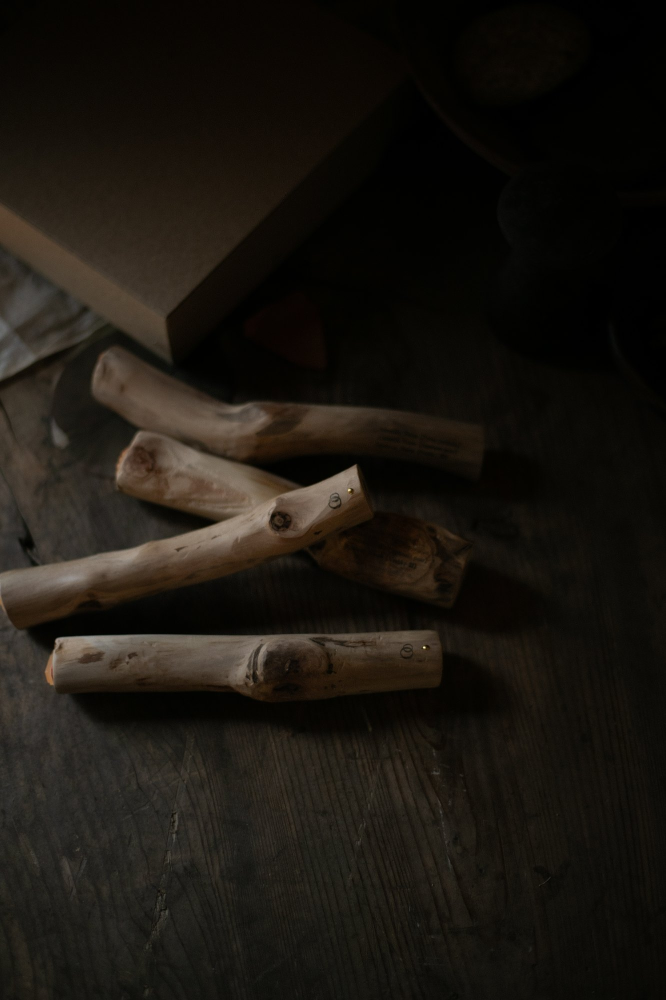
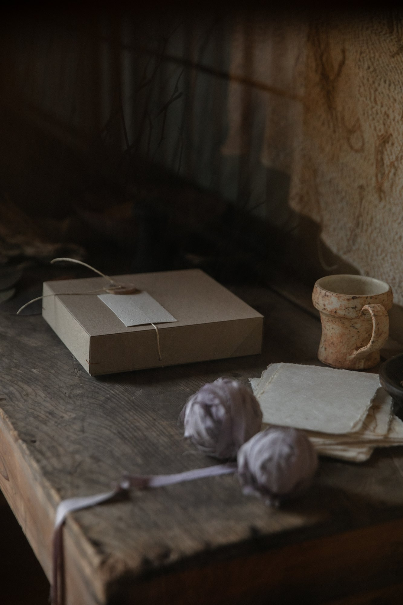
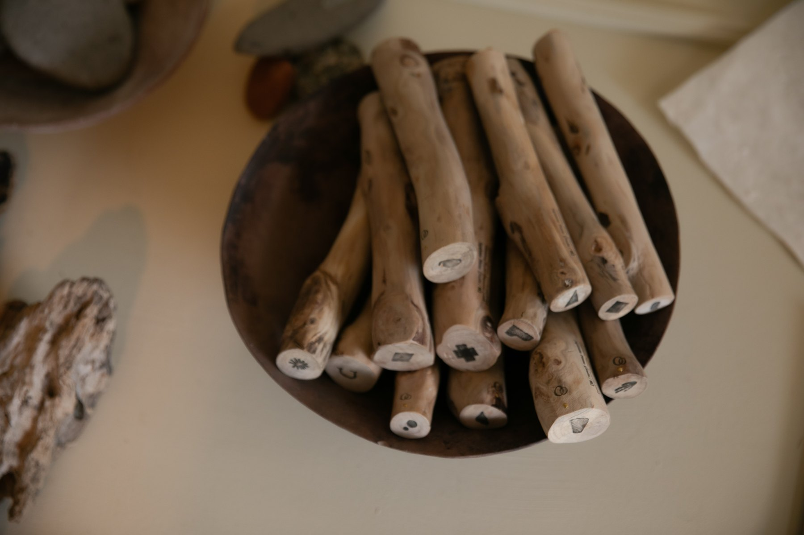
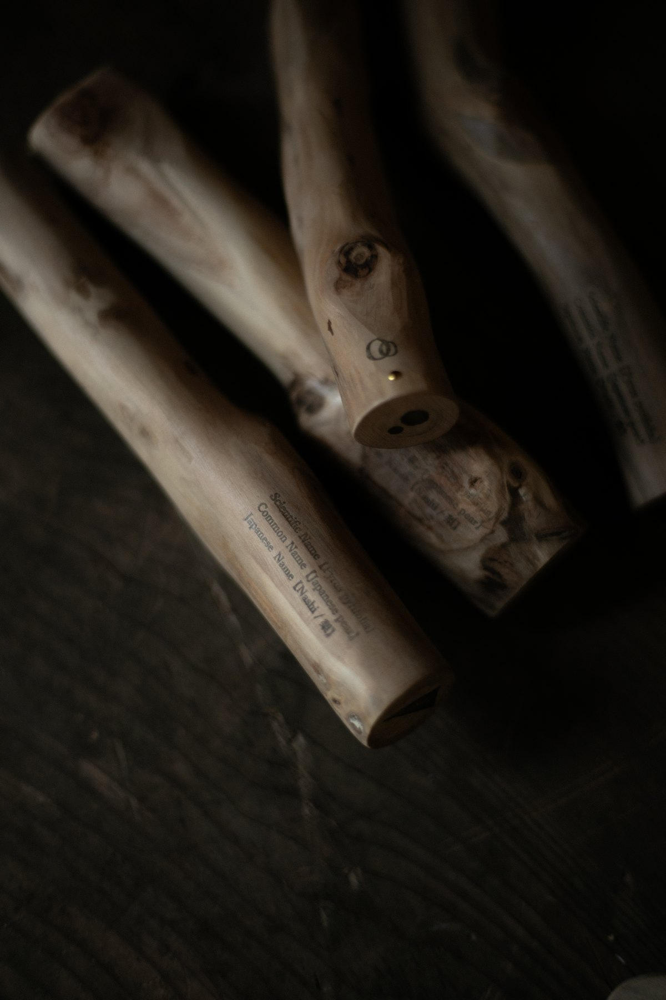
TRUST THE UNEXPECTED.
「ただのスタンプではありません。」スタンプが「模様を再現する画材」であれば、PETALOは「創造性を引き出す画材」です。押すたびに予測できない結果が生まれることで、思考するより先に手が動き、創造のプロセスが開かれます。
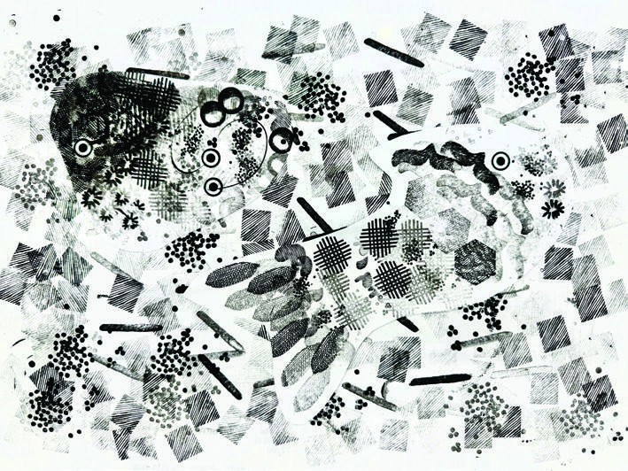
LET IT UNFOLD.
人の中に眠る小さなできるが花ひらき、らしさが息吹く体験を誘う画材となることを願い、PETALO（ペタロ）としました。
PETALO（ペタロ）はスペイン語で「花びら」。LOはスペイン語で「それ」を表します。
今感じている、言葉にならない「それ（LO）」を、直感で「PETA（ぺタっ）」とただただ押して、描いていくだけ。
好奇心をエンジンに、言葉にならない感覚や感情から生まれる模様を追いかけていくと、隣り合い、連なりながら美しく咲く花のように、いつの間にか、わたしの「らしさ」が花ひらいています。
絵が苦手な人でも「押す」だけで「描ける」、スタンプ型の体験画材。偶然生まれるかすれやにじみ、重なりさえも美しく、失敗を恐れずに手を動かす喜びが生まれます。
考えるより先に手が動き、心がほぐれることで、気がつけば無心に描いている。PETALOは、誰もが創造性を発揮できる「心地よいアート体験」を届けるクリエイティブツールです。
スタンプの図案は手描きならではの、あたたかな質感の線。１つ１つが単体として美しい模様にひと押しから、ワクワクが始まります。抽象度が高く、意味を持たないモチーフは、描く人を「こうあるべき」から解き放ち、安心感で包みます。
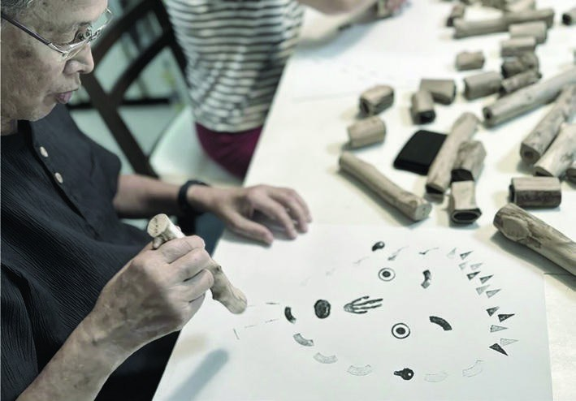
既存の経済システムでは力を発揮しづらい方々も、らしさを活かして参画できる。「心地よくめぐる」経済の仕組みを、地域の方々とともにデザインしています。
PETALOづくりは単なる生産活動ではありません。関わるすべての人が、その人の価値観や生きがいにつながっている「できること」を持ち寄り、自立と共助が循環していく、新しい地域経済モデルを創発しています。
作る人にも、使う人にも、材料を育てる人にも。全ての人に優しい「剪定枝」のハンドル。
梨の枝を使った細長いハンドルは、スタンプにありそうでなかった形状です。使う人が握力の弱い子どもでも、お年寄りでも、障がいのある方でも握りやすく、ダイナミックにペタペタとリズミカルに押せるように。また、ハンドルを一緒に制作する障がい者福祉施設のご利用者さんが、スタッフの補助がなくとも自由に磨く作業が進められる、握りやすいカタチであるように。
地域の農家さんが廃棄に困る梨の剪定枝を、ありのままの自然なフォルムで生かしながら試作を繰り返し、たどり着いたデザインです。
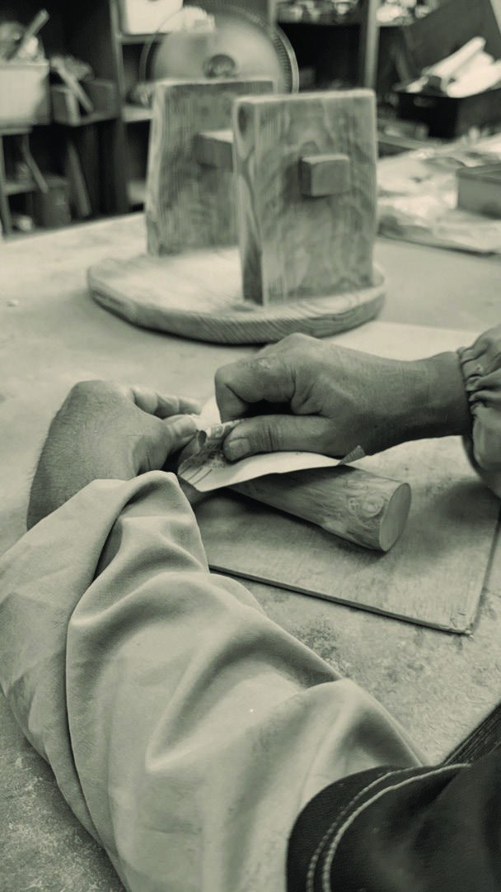
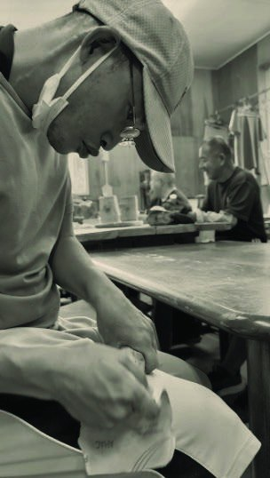
梨の木は「フルーツウッド」と呼ばれ、緻密で美しい木目と淡黄色の木肌を持つ高品質木材です。硬く加工が難しい一方で、耐久性と仕上がりの美しさに優れ、磨くほどに艶を増します。
家具や彫刻、精密部品などに使われるこの素材の潜在価値が、見た目や触り心地を通じて、感覚的に伝わることで、資源の再評価や新たなビジネスの可能性へとつないでいきます。
千葉県は、江戸時代から続く梨の産地。日本国内で和梨の栽培面積・収穫量・生産額すべてにおいて全国一位を誇ります。2021年時点の統計では、収穫量は20,500トン、栽培面積は1,340ヘクタール、生産額は74億円に。土づくりや剪定作業は、おいしい梨を作るための大切な作業です。
PETALOの木製ハンドルは、冬に大量に出る剪定した枝木を使っています。剪定枝は廃棄の費用や労力が嵩む、農家さんの悩みの１つです。その枝木を使い、障がい者福祉サービスを展開する「空と海」さんと一緒にハンドルを制作しています。
果樹農家のみならず、剪定枝の廃棄処理は全国で課題の１つとなっており、その活用のアイデアを拡げていく、価値創造の経済創発モデルとして取り組んでいます。
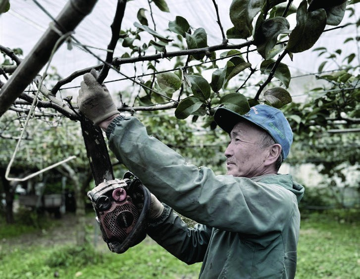
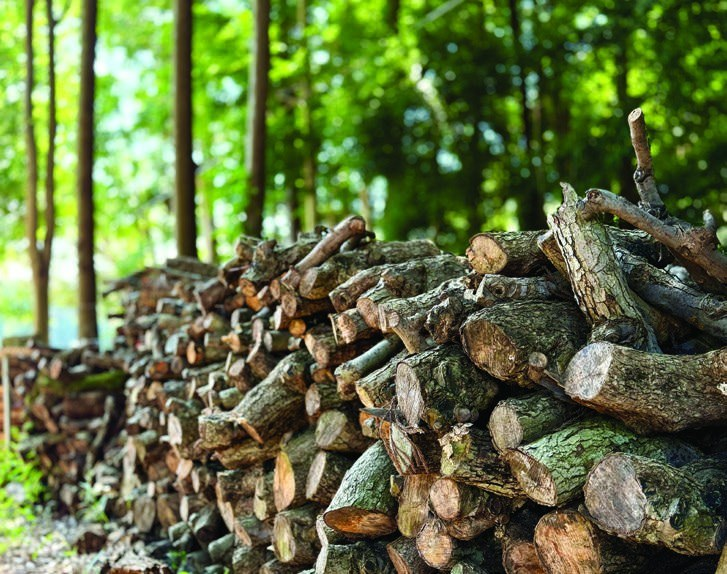
スタンプのグラフィックは、スペインはガリシアを拠点とするデザインチーム、D-dueのアルフレッド・オルメド氏が手掛けました。海の向こうから響く感性が、国境を越えて、PETALOに宿りました。
手描きならではの、あたたかな質感の線。抽象度が高く、意味を持たないモチーフは「こうあるべき」から解き放ち、安心感で包んでくれます。
１つ１つが不思議で美しい模様。ひと押しでワクワクがはじまります。
かけても、かすれても、にじんでも。どう描いても素敵だから、気がつけば無心に。誰もが、描くことに没頭してしまいます。
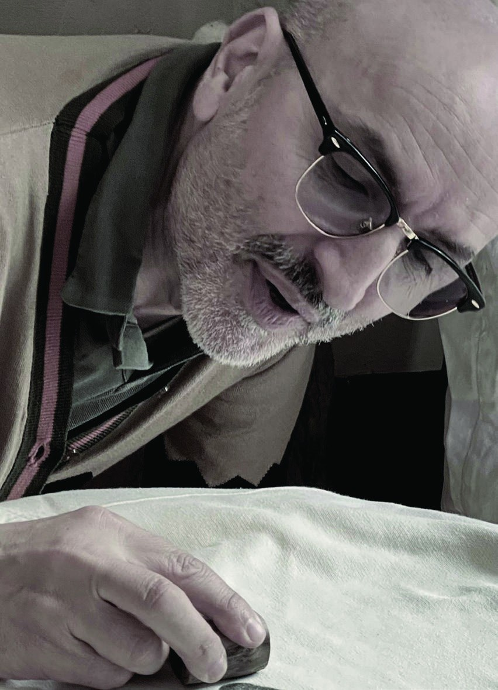
PETALOは保身を「安心」に変換します。安心は、体験を促し、感性に働きかけて、好奇心の花を育み、挑戦したい前向きな気持ちを誘います。
「感じない → 体験しない → 挑戦しない」という保身のループから、「安心 → 感じる → 体験する → 挑戦したい」という挑戦のめぐりへ。
心の奥から湧き上がるもので描いた絵は、あなた自身の「分身」のようなもの。だからこそ、何かと比べて、なんだか劣っているように感じてしまったとき、それはまるで自分自身が否定されてしまったような切なさを感じてしまうのかもしれません。
PETALOは、あなたを表現することの間に、そっと「心地よさ」と「安心」を設計しました。
PETALOはとてもシンプル。まずは好奇心で選んでみて、あとは手の赴くままに。
「描けなかった人ほど、夢中になる。」
どれから使おう？！その気持ちを後押しするのが、木の温もりとあたたかな手仕事を感じるハンドルの握り心地。丁寧に磨き上げたハンドルはすべすべで柔らかく、ずっと握っていたくなります。また、握りやすい細長いスティックはダイナミックさを引き出します。手のひらにしっくりとフィットする優しい触り心地が、「使ってみたい」を支えてくれます。
五感を研ぎ澄ませて「創造する力」と心地よく向き合う時間は、自分自身の内面を整え、人・素材・道具への敬意を育みます。PETALOという素朴な画材が、その美しい循環の一助となりますように。
人が、自分の創造力はもう消えてしまった、あるいは最初からなかった——そう思い込んでしまう時があります。
創造する力は本来、手に入れるものでも、失うものでもありません。誰かを想い、つながり、よろこびを生み出そうとする、その力は、もともと私たちの中にあります。創造とは、すべての人にごく自然に備わっている「思いやり」のカタチです。
PETALOは、梨農家さんが廃棄に困る剪定枝を丁寧な手仕事で再生して誕生したスタンプ型の体験画材です。
押すたびに現れる、思いがけないカタチや表情。その小さな「セレンディピティ（偶発）」を楽しむうちに、あなたの中に眠る創造の芽は、静かに息を吹き返していきます。
幾つでも、幾つになっても。創造性はあなたの中に在ることを、日常の中で思い出す小さなきっかけとなりますように。
新聞紙や古紙にペタペタ。お散歩で集めた草花を包んで花束を贈る。
絵ハガキを送る。オリジナルの包装紙を作る。みんなで１枚の大きな絵を描く。
木の板に、壁紙やドアに、テーブルに。ご飯を待ってる間に紙を敷いて、世界に１つのランチョンマットでいただきます。
着古した白いTシャツや作業着、エプロンに。芸術家オーラ満載の１点もののワードローブのでき上がり。
NINE KITS. THIRTY-SIX POSSIBILITIES.
気になる模様や、心にふれた言葉から。
9つのキットから、あなたのひとつを。
KIT 01
はじまりは好奇心から
KIT 02
目を覚まし、息吹く創造性
KIT 03
心ほどける時間
KIT 04
違いを、ありのままに迎える
KIT 05
最初の一歩を信じる
KIT 06
自分に、人に、地球にやさしく
KIT 07
全ての表現に拍手を
KIT 08
ささやかな創造を重ねていく
KIT 09
分かち合うほどにめぐる喜び
36種類の「意味を持たない模様」。一人ひとりが、自分のかたちや物語、解釈を見つけるために。
ストアでキットを見るUNIVERSAL & UPCYCLE DESIGN
NO RIGHT ANSWER. JUST YOUR OWN.
模様を選んで、紙の上をクリック。
重ねたり、向きを変えたり。
あなたの景色を、見つけてください。
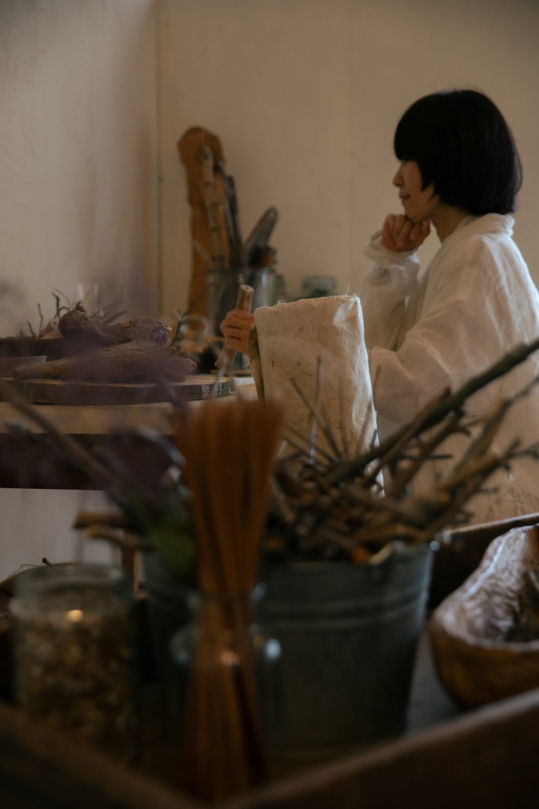
MANY HANDS. ONE SHARED JOY.
多様な人のクリエイティビティが重なって、PETALOは生まれました。地域の中にあるNHUMAで出会い、試し、共につくる。その時間が、この画材の原点です。
何に見えるか、どう重ねるか。決まった答えのない模様が、一人ひとりの想像をひらきます。PETALOは、完成した絵だけでなく、感じ、試し、発見する時間を大切にする画材です。
空と海の手仕事、サンビーの技術、D-dueの感性。それぞれの得意なことが出会い、木の持ち手と自由な模様を持つcreative toolへと育ちました。
地域のさまざまな世代がプロトタイピングに参加しました。手に取り、押してみて、感想を交わす。コミュニティの中にあるNHUMAだからこその開発環境が、「誰もに描く喜び」を目指すものづくりを支えています。
梨の剪定枝を持ち手に活かし、一つずつ磨いて仕上げます。枝の曲がりや節、木目はそれぞれの個性。スタンプ部分には光硬化樹脂を用い、手にふれる素材と描くための技術をつないでいます。
For Goodでのクラウドファンディングを経て、For Goodアワード2025の一般投票賞を受賞。D-dueとの共創を含め、地域から海外へ、描く喜びを分かち合う活動を広げています。
プロジェクトの歩みを読むCREATIVE PARTNERS
creative space NHUMAに集い、共につくり、試作し、このプロジェクトを一緒に育んでくださった、すべての友人と地域の皆さまへ。